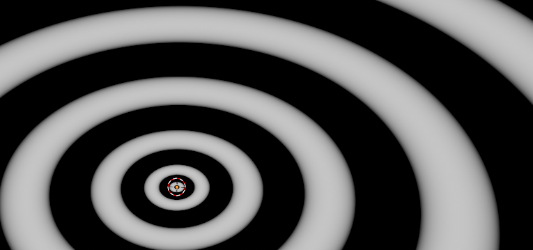
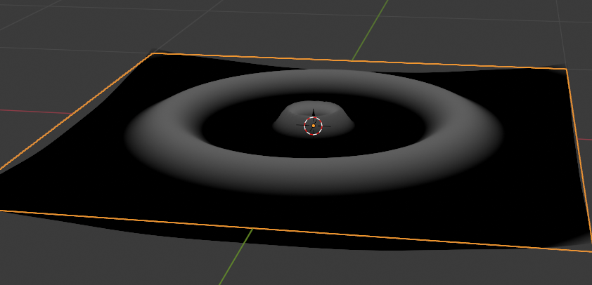
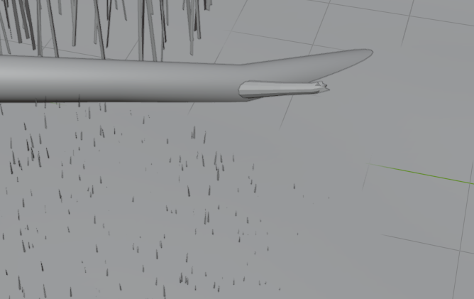
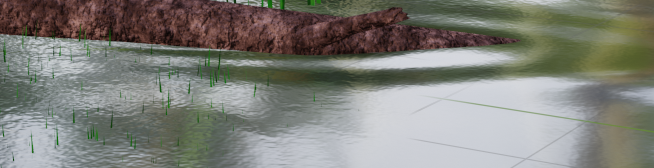

Turns out waves on water get really weird. At a deep enough level (wavelength is much shorter than the height of the water) the speed of a wave is dependant on its wavelength. This is called dispersion and causes a bunch of weird phenomenon to occur on the open ocean and the transition to shallow water.
Dispersion was the model I wanted to use to any waves involved as the die-off of the waves should give it a nice curve to fade away as the wave travels. The massive issue is that I could not find any good simple models for these waves that could be rendered (the only thing I found were Bessel functions and I know I'm not making those).
In the end I found a way to scale the waves as it gets farther from the source using exponents. taking the distance to the source to some power (I used 0.35 for testing) gives a decent scaling, but other linear scalings are needed to reach a desired effect.
After this an exponential decay was added to help it fade to nothing as the wave gets farther from the point source. Stokes wave was also used instead of a sine wave in the end.
Now I just need to map this to the final mesh for wherever waves are originating from. I'll leave it as an excersize for the reader that these point sources can be combines to form a line/any curve.
There's a problem. The initial waves are built in blender using a modifier, and this modifier prevents some of the tricks to get pixel depth precision on my functions. Without this trick I could only get a depth down to a vertex, which is much more spaced and really doesnt look good. The only thing I could do now is manually add every wave source, which I wasnt going to do. I had this mathematical model maps out, but another problem I saw coming prevented the complexity. In the end I used this point source model for the log in the image (albeit stretched so I only needed one point source) and settled on a noise texture to mimic the chaos around the grass.
after that it's using a lot of different blurs (motion blur and depth of field) to try and hide a lot of the 'neatness' of a render and to try and make the final render look more like a photograph.